CCFormer：腾讯工业推荐中的跨字段交互与分层长序列压缩
CCFormer 的英文全题是 CCFormer: Efficient Cross-Field Interaction and Hierarchical Sequence Compression for Industrial Recommendation at Tencent。作者 Yunlong Wang、Huizhe Zhang、Haonan Hu、Yudong Li、Bing Wen、Jianchao Tu、Chengxiang Zhuo、Zang Li 均来自腾讯 Platform and Content Group；论文于 2026 年 7 月 30 日以 arXiv v1 公开，PDF 采用 KDD 2027 稿件模板，但 DOI 仍为占位符，因此会议录状态需要后续核验。唯一论文入口是 arXiv:2607.28070。摘要页与 PDF 首页均未核验到独立代码仓库；论文说明模型构建在腾讯 Numerous-Torch 生产基础设施上。
工业推荐希望通过更长行为序列和更大模型获得可预测的收益，但完整自注意力的二次成本无法满足严格延迟与资源约束；预先压缩会削弱细粒度的目标—历史交互，截断又会丢弃仍可能有用的长期兴趣。
1. 背景和问题
1.1 长序列的收益为什么很难直接兑现
序列推荐的基本愿望很清楚：用户在广告、电商、新闻或短视频中留下的行为越长，模型越有机会恢复长期、动态且分散的兴趣。近年的工业模型还观察到近似 scaling 现象——增大隐藏维度、拉长历史、投入更多计算，离线效果往往继续上升。然而排名场景不是可以任意扩展上下文的离线语言建模：一个请求要同时打分许多候选，服务端受延迟、显存、通信和峰值 QPS 约束；若对长度为 L_s 的历史做完整 self-attention，计算和中间激活都按 O(L_s^2) 增长。序列从 200 扩到 2000，不只是十倍 token，而会把注意力主项推到百倍量级。
已有方法通常在两个方向上妥协。第一类先把长历史压成一个或少数向量，再与候选做特征交互，成本低，却可能在看到候选之前就丢掉细粒度行为；对“同一用户为什么会点这一条内容”这类 target-aware 问题，过早池化尤其危险。第二类先检索、截断出一个短窗口，再保留窗口内 token 级建模；它能做细交互，但被裁掉的旧行为不再有翻身机会，而且窗口中的全注意力仍非免费。稀疏注意力降低了一部分开销，却主要优化序列内部计算，并没有自动解决用户画像、目标物品和历史行为三种异质字段应当如何有方向地交叉。
1.2 CCFormer 重新拆分了哪两个问题
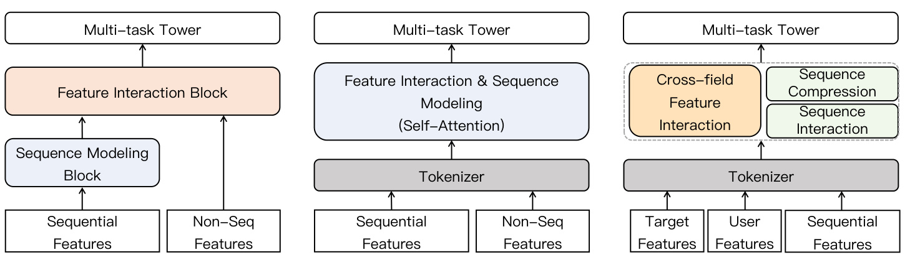
Figure 1 从左到右给出三种结构。左侧传统方案把“序列建模块”和“特征交互块”串起来，长历史往往先被压缩，之后才与非序列特征融合；中间方案把序列与非序列 token 一起交给 self-attention，交互充分但复杂度高，也把字段的不同语义角色抹平；右侧 CCFormer 则将目标、用户、历史分别 token 化，把 cross-field feature interaction、sequence interaction、sequence compression 作为可组合而非互相替代的组件。关键并不是又发明一种池化，而是延迟信息丢失：每层先让目标/用户从当前历史中取信息，再在局部子空间内混合行为，最后才逐层压缩。因而深层序列虽短，每个 token 已吸收更宽的原始历史；目标也在压缩过程中持续接触当前层的行为表示。
CCFormer 真正回答的是两个正交问题。其一，跨字段交互不等于把全部 token 当成同质集合：用户要从历史中提炼稳定偏好，目标要同时判断与历史的相关性、与用户画像的兼容性，三者需要不同的查询方向。其二，序列内部交互不一定依赖全局两两注意力：若将相邻行为和部分通道重排为小子空间，用门控前馈网络混合，再靠分层卷积扩大感受野，就可能用局部线性代价逼近多粒度依赖。论文把这两个建模选择和 Numerous-Torch 的稀疏参数、混合精度、候选并行打分连接起来，目标不是单纯追求离线 AUC，而是让结构能够进入真实排序链路。
这项工作的研究价值也来自证据组合。公开集检验与常见 DLRM、序列模型的相对效果；四十亿级内部样本检验结构在真实特征和更长历史上的 scaling；组件消融同时报告精度和训练吞吐；最后两个线上场景覆盖视频互动、活跃、观看和广告收入。这样的链路比只报一个 AUC 更接近工业推荐的决策问题。不过，论文仍是一篇公司生产系统论文：完整数据、特征工程、Numerous-Torch 配置和线上基线没有公开，外部读者能复现的是机制方向，而不是同样的绝对收益。尤其是字段定义、候选规模和多任务权重都可能改变共享计算的价值，这些未披露条件应当和结果一起阅读。
2. 方法
论文先把输入显式分为用户画像 U^(0)∈R^(B×L_u×d)、行为序列 S^(0)∈R^(B×L_s×d) 与目标物品 T^(0)∈R^(B×L_t×d)。其中用户异质特征被投影成少量 user tokens，每个历史行为和目标物品保持 item-level token。第 ℓ 个块的总更新写作：
符号解释：B 是 batch size，d 是隐藏维，L_u、L_s、L_t 分别为用户、历史和目标 token 数，L 是堆叠块数。最终三类表示归一化、池化后进入多任务预测塔。一个 CCFormer block 的顺序是跨字段检索、时间—位置增强、序列子空间混合、卷积压缩；目标与用户在每层读取历史，而历史长度随深度下降。
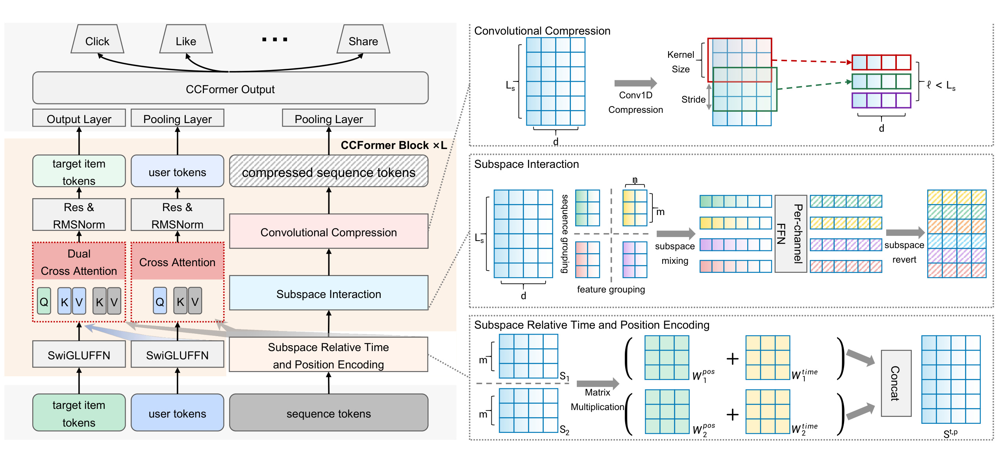
Figure 2 左半部画出目标、用户与序列三路：目标经过 SwiGLUFFN 后发出两组 query，分别读取序列和用户；用户发出 query 读取序列；序列不反向读取目标，从而避免候选之间的信息泄漏。右半部把序列路径展开为三步：相对时间和位置矩阵先作用于局部分组，subspace interaction 再沿 token 与 channel 两个维度重排、门控混合并还原，Conv1D 最后缩短序列。上层重复同一 block，因此压缩不是前置的一次性摘要，而是夹在多次交互之间。输出端目标、用户和压缩序列分别池化进入多任务塔，图中的 Click、Like、Share 表明同一主干可以服务多个响应目标。右上角的压缩、右中部的 mixing 与右下角的编码是同一序列路径的连续操作，不能理解为三个并行分支。
2.1 字段分离的有向交叉注意力
用户和目标先各自经过轻量 SwiGLU FFN：Ū^(ℓ)=SwiGLUFFN_u^ℓ(U^(ℓ))，T̄^(ℓ)=SwiGLUFFN_t^ℓ(T^(ℓ))。随后用户产生 Q_u、K_u、V_u，行为序列只产生 K_s、V_s；目标则产生两组 query Q_(t→s) 与 Q_(t→u)。三条有向流为：
这里 d_k=d/h 是单头维度，M 只在涉及序列时屏蔽 padding。输出更新为 ΔU^(ℓ)=O_(u→s)W_u^O 与 ΔT^(ℓ)=[O_(t→s);O_(t→u)]W_t^O。这使 user token 选择性汇总长期行为，target token 同时获得“这个候选与哪些历史相关”和“它是否符合用户画像”两类信号。训练时目标 token 对应已曝光样本并由多任务损失共同优化；推理时同一请求的多个目标只做 query，不互相 attention，因此可以共享一次用户和序列编码，避免每个候选重复跑长历史。
2.2 子空间内的相对时间—位置编码
行为的新近性和顺序不能因移除全局注意力而消失。论文把 S 沿序列维切成长度为 m 的组，而不是为整条历史建立全局关系矩阵；同一局部组既要区分行为发生得早晚，也要区分彼此相隔多久，并把这种差异直接写入后续 mixing 使用的表示。第 p 组中行为 i、j 的相对时间权重为
其中 α、γ>0 可学习，t_(p,i) 是时间戳；时间差越大，权重单调衰减。相对位置偏置为 W_(p,i,j)^pos=W_(pos-origin)[i-j+m-1]。两者相加后作用于本组行为：
符号解释：p 是序列组编号，m 是每组行为数，β 控制时间衰减，W_(pos-origin)∈R^(2m-1) 存储可学习相对位移。该操作只在局部组内形成 m×m 关系矩阵，复杂度由全局 O(L_s^2) 降到 O(L_s m)。它并不宣称捕获全部跨组依赖；跨组信息主要依靠后续逐层压缩和感受野扩展传递，这是效率来源，也是可能漏掉罕见远程关系的地方。
2.3 长序列子空间 Token Mixing
时间—位置增强后，论文将序列和通道同时分组。这里不是沿一个轴做普通 MLP：序列分组决定哪些相邻行为可在一次算子中交换信息，通道分组则决定同一行为表示的哪些子维度共享一套模式提取参数。两种划分相乘后形成联合子空间：
每个 X_(b,p,c)∈R^(mn) 包含相邻 m 个行为和 n 个隐藏通道，不再计算所有行为对。第 c 个通道组使用独立门控前馈网络：
符号解释：n 是 channel group size，φ 是平滑激活，⊙ 为逐元素乘法，W_g^c、W_v^c、W_o^c 是第 c 个通道组的参数。这个 reshape 很关键：PFFN 的输入不只是一枚 token 的通道，而是相邻 token 与通道的联合小块，所以普通 FFN 获得了局部 token mixing 能力；不同 c 使用独立参数，又允许通道子空间学习异质模式。代价是交互范围受 m 限制，模型必须依靠多层和压缩把局部模式递归传播。
2.4 分层卷积压缩与逐层扩大的感受野
第 ℓ 层子空间 mixing 后，序列沿时间维执行一维卷积下采样：
符号解释：k 是卷积核大小，s 是 stride，Ŝ^(ℓ) 是本层 mixing 结果。卷积融合相邻行为并缩短下一层输入；浅层 token 对应短期、细粒度模式，深层 token 对应更抽象的长期兴趣。它与先池化再交互不同：每层压缩前都已经完成一次字段交叉和局部 mixing，目标能够在信息逐步浓缩的同时反复读取序列。
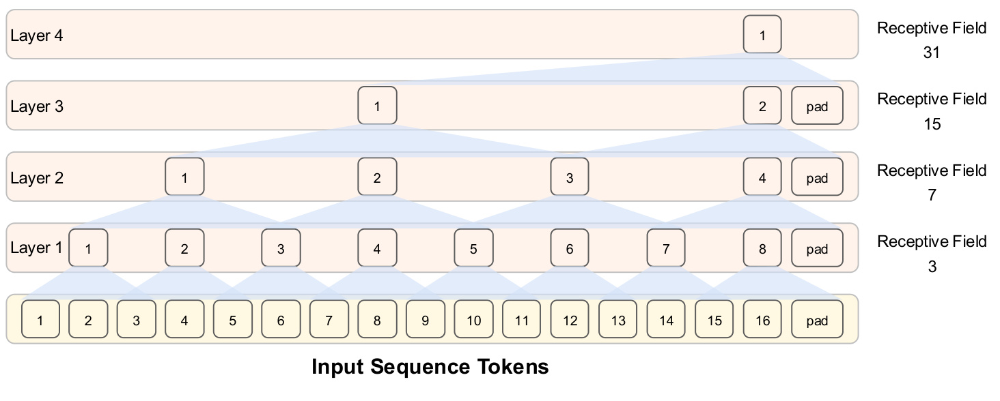
Figure 3 用 k=3、s=2 的示意说明层数带来的递归覆盖。16 枚输入行为经过第一层后，每个 token 的原始感受野为 3；第二、三、四层依次扩到 7、15、31，边缘用 pad 保持卷积执行。这里的重要信息不是“序列越深越短”本身，而是深层的一枚 token 已整合连续的大范围原始历史。subspace mixing 负责每层局部的 token/通道联合模式，卷积负责跨层扩大覆盖，二者共同避免在输入端把整段历史压成一个不可追踪的向量。相应风险也很明确：卷积偏向局部连续聚合，若真正关键的两个行为相隔很远且中间充满噪声，它们要经过多层才能相遇，信号可能已被稀释。图中的 pad 还提示边界 token 接收的真实行为少于中部 token，论文未单独分析这种位置不对称。
2.5 Numerous-Torch 上的训练与推理落地
训练侧，CCFormer 建在 Numerous-Torch 上，主模型采用 BF16/FP16 混合精度，论文称可减少超过 35% 的内存；超大的 user/item ID embedding 用 INT8 对称线性量化，相比全精度约压缩 70%，再用 double hashing 将 ID 表规模进一步减少约 50%。基础设施还覆盖分布式摄取、稀疏—稠密联合训练、断点恢复、导出和新反馈日志上的持续训练。公开的默认工业配置是 8 个 block，d=256、m=8、n=16、k=3、s=2，Adam 学习率 10^(-4)，batch size 4096，在 16 张 NVIDIA H20 上比较。
推理侧的关键与训练不同：线上一个用户请求包含多个候选，target tokens 仅作为 query 且彼此不 attention，所以所有候选可以一次塞进 target field；用户画像和长序列主干只计算一次，各目标再并行输出多任务分数。这既防止候选之间信息泄漏，也直接把共享表示转化为吞吐。论文称即便 CCFormer 的理论计算量是原 DLRM 点式基线的 20 倍，在同样推理资源下，多候选并行仍使峰值 QPS 提升 30%。这个数字提醒我们，模型 FLOPs 不能单独代表 serving 成本：请求级共享比例、候选批处理和稀疏表访问同样决定真实吞吐。
3. 实验结果
3.1 数据、指标与实现设置
实验包含 Taobao、KuaiRec 和腾讯内部数据。公开集把点击物品作为行为序列并预测目标是否点击；KuaiRec 取 big matrix，观看比例不小于 2 记为正样本。两个公开集序列截断到 200，工业数据取一个月线上日志与真实反馈，序列长 1000。基线包括 DIN、DeepFM、SASRec、MIMN，以及生产导向的 HSTU、OneTrans、STCA。公开实验重复五次报告均值和标准差；工业集报告 AUC、GAUC。超参由 TPE 搜索，所有工业比较使用相同软硬件栈。
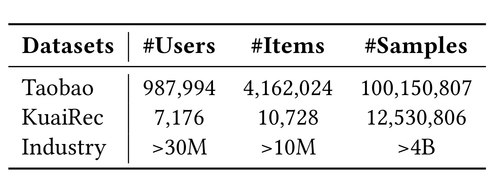
Table 1 显示三个数据口径并不处于同一量级。Taobao 有 987,994 个用户、4,162,024 个物品和 100,150,807 条样本；KuaiRec 只有 7,176 个用户、10,728 个物品，但交互达 12,530,806；内部集超过 3000 万用户、1000 万内容和 40 亿样本。公开集适合检验可比较性，内部集才真正压力测试稀疏表、分布式训练和长序列吞吐。也因此，公开读者不能把内部提升直接归因于某个单模块：数据分布、特征集合、负采样、任务塔和服务基线都未公开。表中规模能证明“工业级”，却不能替代可复现的数据生成协议。
论文的相对提升不是简单 ((A-B)/B)，而以 AUC 随机基线 0.5 校正：
这会放大看似很小的绝对 AUC 点差，因此阅读 Δ 时必须同时看原始 AUC/GAUC。训练效率以单位时间处理样本数衡量，speedup 相对 HSTU；线上提升则为业务指标的相对 lift，并用两样本 t-test 检验 p<0.05。
3.2 公开与工业主结果
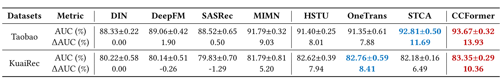
Table 2 中，CCFormer 在 Taobao 达到 93.67%±0.32% AUC，在 KuaiRec 达到 83.35%±0.29%，均为全表最高。Taobao 上最强对手 STCA 为 92.81%±0.50%，绝对差 0.86 个百分点；KuaiRec 上 OneTrans 为 82.76%±0.59%，差 0.59 个百分点。相对 DIN 的 ΔAUC 分别是 13.93% 与 10.36%。值得注意的是，HSTU 在两个公开集都不是第二名，说明 CCFormer 的优势不能简化为“比 HSTU 更省”；字段交互与局部 mixing 在较短的 200 序列上也提供了准确率收益。五次实验有标准差，但论文未给逐次显著性检验，因而更可靠的判断是两套数据上的一致排名，而不是把单次小点差视作绝对优势。
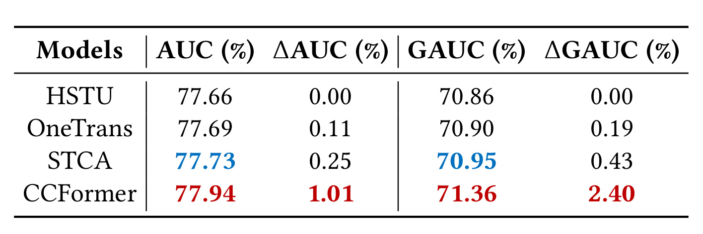
Table 3 的内部集上，CCFormer 为 77.94% AUC、71.36% GAUC；HSTU 为 77.66/70.86，OneTrans 为 77.69/70.90，STCA 为 77.73/70.95。相对 HSTU，绝对点差是 0.28 AUC 和 0.50 GAUC，按 0.5 校正后的相对提升为 1.01% 与 2.40%；相对最强替代基线 STCA，仍高 0.21 与 0.41 个百分点。GAUC 提升大于 AUC，意味着优势并非只由大流量用户或全局样本排序贡献，按用户分组后的区分能力也更强。不过，表格没有置信区间、用户活跃度分桶或长尾内容分桶，尚不能判断提升是否均匀覆盖冷用户与低频物品。由于各模型共享同一 16×H20 栈，这张表适合比较算法，但仍缺少绝对延迟和资源利用率。
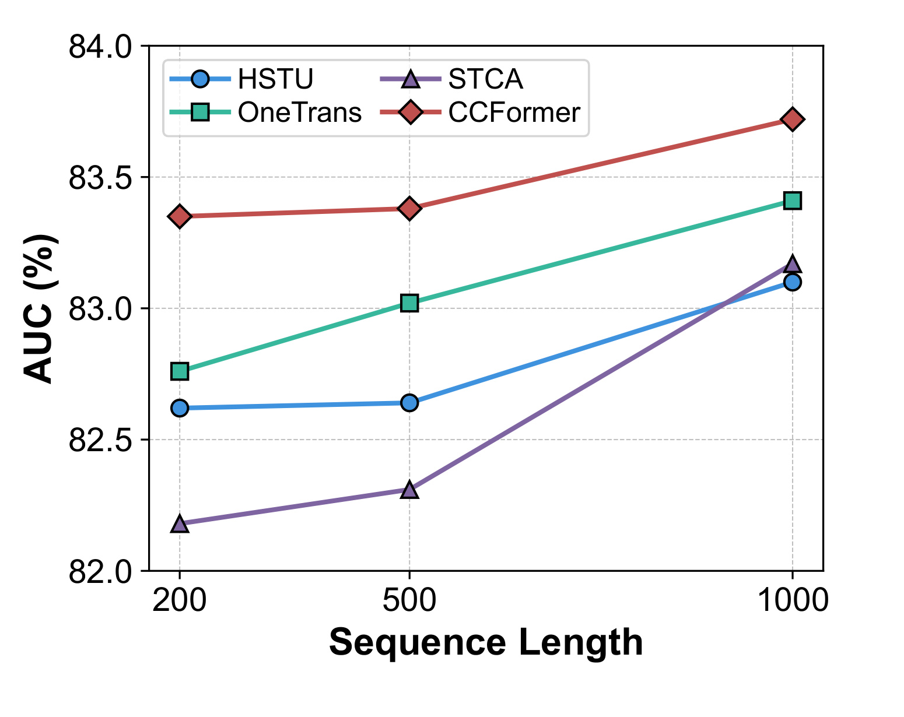
Figure 4 把 KuaiRec 序列改为 200、500、1000。CCFormer 的 AUC 大约从 83.35 升到 83.72，三个点都高于 OneTrans、HSTU、STCA；OneTrans 也随长度稳定上升，STCA 在 500 到 1000 之间上升更陡，HSTU 则较缓。图的价值在于排除“只在作者默认窗口上调参占优”的简单解释：CCFormer 的排名随长度没有反转。与此同时，三点曲线仍不足以证明无限外推的 scaling law；最长仅 1000，且横轴没有展示训练/推理成本，真正 lifelong 历史是否仍保持同样斜率需要结合工业集的 2k 实验和未来更长序列验证。尤其 STCA 在长端快速追近 HSTU，说明基线之间的相对排序会随窗口变化，不能只比较单一默认长度。
3.3 模型宽度与序列长度 Scaling
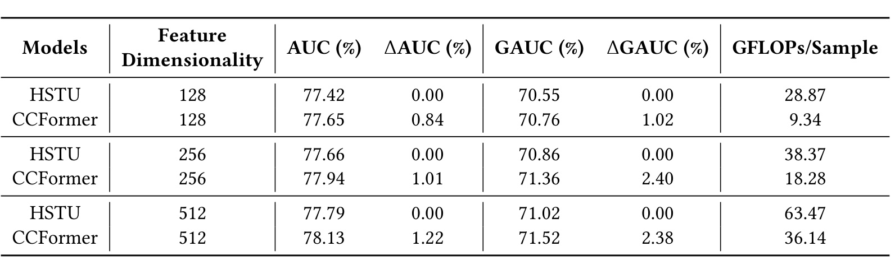
Table 4 在内部数据上将隐藏维从 128、256 增到 512。CCFormer 的 AUC 由 77.65 升到 77.94、78.13，GAUC 由 70.76 升到 71.36、71.52；同宽 HSTU 分别为 77.42/70.55、77.66/70.86、77.79/71.02。更重要的是 GFLOPs/sample：128 维时 CCFormer 9.34、HSTU 28.87；256 维是 18.28 对 38.37；512 维是 36.14 对 63.47。CCFormer 的计算量随宽度增加，但始终低于 HSTU，并维持精度优势，说明节省并非靠固定小模型换取。不过 GFLOPs 不包含稀疏 embedding 通信、内存访问和候选共享收益，不能直接等价为线上延迟。
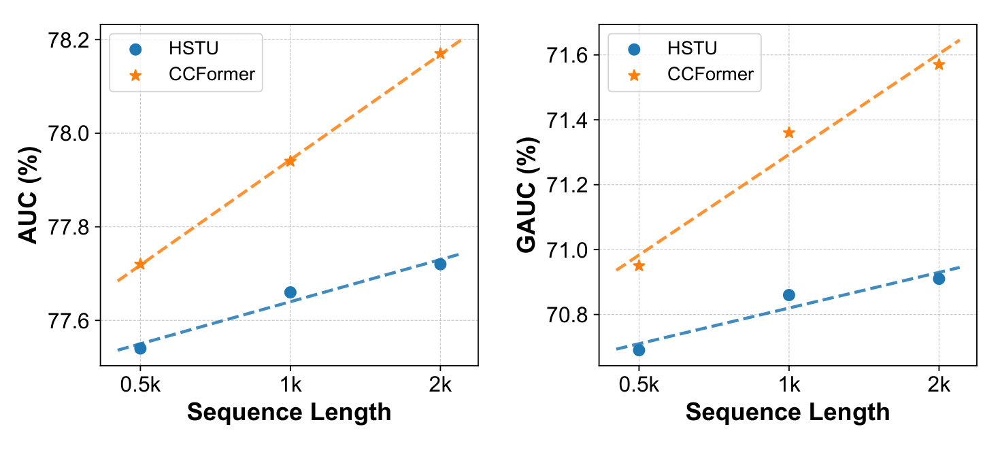
Figure 5 将内部序列从 0.5k、1k 扩到 2k。CCFormer 的 AUC 由 77.72% 稳步增至 78.17%，GAUC 由 70.95% 增至 71.57%；HSTU 也随长度上升，但曲线更低、更平。论文报告三个长度上 CCFormer 相对 HSTU 的平均 AUC/GAUC 提升为 1.08%/2.37%，甚至 0.5k CCFormer 已能匹配 HSTU 2k 的 AUC 并超过其 GAUC。这支持“更好的交互和压缩能提高每枚历史 token 的利用率”，而不是只证明“喂得越长越好”。但三档长度仍是有限范围，且图中没有同点吞吐、显存和延迟曲线，scaling 的完整成本边界还需 Table 4 与消融 speedup 补充。两条指标都随长度单调改善，使结论不依赖单一 AUC 口径。
3.4 超参数敏感性
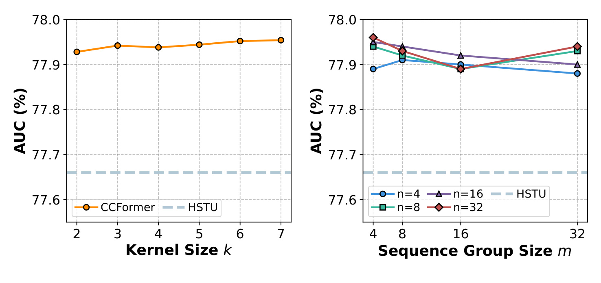
Figure 6 左图将卷积 kernel k 从 2 调到 7，AUC 只在约 77.92% 到 77.95% 间小幅波动，始终明显高于 HSTU 的 77.66% 虚线；右图组合 sequence group size m∈{4,8,16,32} 与 channel group size n∈{4,8,16,32}，多数结果落在 77.88% 到 77.96% 的窄区间。小组有时略优，但不存在一改分组就崩溃的尖锐最优点。默认 m=8、n=16、k=3、s=2 因而更像效果—效率折中，而非依赖偶然调参。图中只展示 AUC，未展示不同分组对 kernel 吞吐、张量对齐或设备利用率的影响，生产选择仍可能由硬件决定。进一步看，曲线的纵轴范围很窄，肉眼波动不应被夸大为显著差异；稳健性的主证据是所有配置都越过 HSTU，而非某个点高出零点零几。
3.5 组件消融与效率权衡
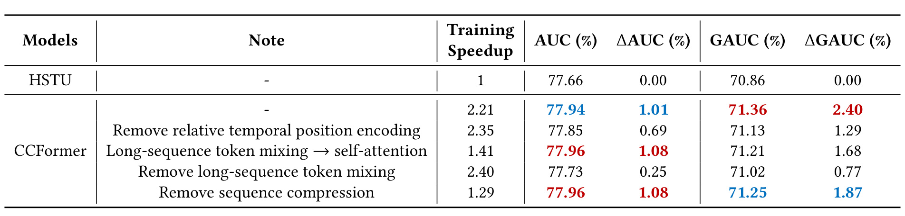
Table 5 把“谁贡献精度、谁贡献速度”拆开。完整 CCFormer 是 77.94 AUC、71.36 GAUC、2.21× 训练加速。去掉相对时间位置编码后降到 77.85/71.13，但加速反而为 2.35×，说明该编码主要换取新近性建模；把 token mixing 换成 self-attention，AUC 微升到 77.96，GAUC 降到 71.21，加速降至 1.41×，说明全注意力并未带来一致效果，却明显吃掉吞吐；完全去掉 token mixing 时跌到 77.73/71.02，是最大精度损失；去掉序列压缩时 AUC/GAUC 为 77.96/71.25，但加速只剩 1.29×。因此 mixing 是主要表达组件，compression 是主要效率组件，时间位置编码补充精度，三者的作用并不重叠。
这个消融也揭示值得谨慎解读的细节：在纯 AUC 上，self-attention 替换和移除压缩都比完整模型高 0.02 个百分点，作者选择完整 CCFormer 是因为 GAUC 与速度的联合折中，而非所有单指标绝对最优。完整模型相对 HSTU 计算更多模块，却通过局部 mixing 与缩序列达到更高吞吐；2.21× 是在固定 16×H20、相同栈上的训练 throughput，不代表任意 GPU 或任意 batch 都能复现。若部署硬件对卷积/reshape 支持较差，或候选数量太少无法摊薄共享编码，真实收益可能收窄。
3.6 线上 A/B 与部署结果
两个商业场景分别是视频推荐和广告排序。视频场景基线为长期迭代的 DLRM，广告场景基线为已部署 HSTU；每个实验组每天超过一百万曝光用户，持续两周。目标端的候选并行避免了候选间泄漏，又让用户和序列表示共享一次前向。论文称 A/B 后 CCFormer 已在两个场景全量上线，收益在全流量中保持稳定。
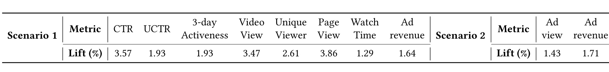
Table 6 的视频场景中，CTR +3.57%、UCTR +1.93%、3-day Activeness +1.93%、Video View +3.47%、Unique Viewer +2.61%、Page View +3.86%、Watch Time +1.29%，广告收入 +1.64%；广告排序场景 Ad view +1.43%、Ad revenue +1.71%。这些指标同时覆盖即时点击、观看消费、用户覆盖、短期留存与变现，减少了“只优化 CTR 伤害长期体验”的担忧。全部结果经两样本 t-test 达到 p<0.05，但论文没有给方差、置信区间、流量分桶或 guardrail 指标，也没有说明多指标检验校正；因此可确认方向稳定，却不能从表中判断收益在不同人群、内容类目和时段上的均匀性。
线上结果与离线证据形成了较完整的闭环：GAUC 的明显改善对应用户层面的区分能力，视频互动与广告收入又分别验证消费和变现。更难得的是系统侧并非只报告“延迟可接受”，而给出同资源峰值 QPS +30% 的请求级并行结果。不过这项收益依赖一个重要前提：同一用户请求中有足够多候选共享 user/sequence field；如果是单候选、低候选数或用户历史频繁变动的链路，共享比例下降，理论 FLOPs 高于 DLRM 的成本会更突出。
4. 总结
4.1 核心判断
CCFormer 最有价值的地方是把工业长序列推荐拆成三层契约。建模层不再把用户、目标和历史视为同质 token，而用 u→s、t→s、t→u 三条有向流保留字段语义；序列层把时间位置、小范围 token/channel 混合和逐层卷积组合，使局部计算通过深度获得大感受野；系统层再利用混合精度、稀疏表压缩与请求内多候选并行，把结构节省兑现成 2.21× 训练吞吐和 +30% 峰值 QPS。公开集、四十亿级内部集、消融和两组线上 A/B 都指向同一个结论：完整全局注意力不是利用长历史的唯一方式，细粒度交互与分层压缩可以同时存在。
这篇论文也提供了一个比“最大 AUC”更成熟的选择标准。完整模型并非在消融表的单一 AUC 上最高，却在 GAUC、训练速度和线上可部署性之间更平衡；将 mixing 换回 self-attention 几乎没有准确率红利，却损失大量吞吐；去掉压缩也只换来极小 AUC 点差。因此 CCFormer 的核心贡献不是某个孤立算子，而是明确规定哪些交互必须保持细粒度、哪些序列计算可以局部化、哪些信息应随层数渐进压缩。
4.2 局限与后续验证
第一，内部数据、特征、任务权重、Numerous-Torch 与线上基线不可公开，外部无法复现 2.21×、+30% QPS 或业务 lift。第二，公开实验最长 1000，内部 scaling 最长 2000，与论文提出的 lifelong-scale 历史仍有距离；三点曲线只能说明当前范围的单调趋势。第三，局部分组和卷积压缩可能稀释相隔很远但稀有关键的行为，论文没有长程合成任务、事件召回率或分层可解释性分析。第四，线上表缺少置信区间、分桶、长期 guardrail 和多重检验校正，也没有披露全量后的绝对延迟与资源账单。第五，PDF 使用 KDD 2027 模板但 DOI 为占位符，正式发表状态尚未核验。
后续至少应做三组验证。其一，把长度扩到 4k、8k 乃至更长，同时画 AUC/GAUC、训练样本吞吐、峰值显存、P95 延迟的 Pareto 曲线，检验 scaling 是否在压缩误差增大前仍成立。其二，按活跃度、历史跨度、兴趣漂移、长尾内容和关键事件距离分桶，对比不同 m、n、k、s 下的信息保留，定位分层压缩真正受益或受损的人群。其三，在公开实现中分别复现有向 cross-attention、subspace mixing、分层压缩和候选并行，报告算子级 profiling，并与线性注意力、检索式长序列、稀疏注意力在相同预算下比较。论文已给出足够清晰的结构假设；下一步最需要的不是再报一个整体 AUC，而是把“精度来自哪里、吞吐省在哪里、远程信号丢在哪里”逐项公开化。